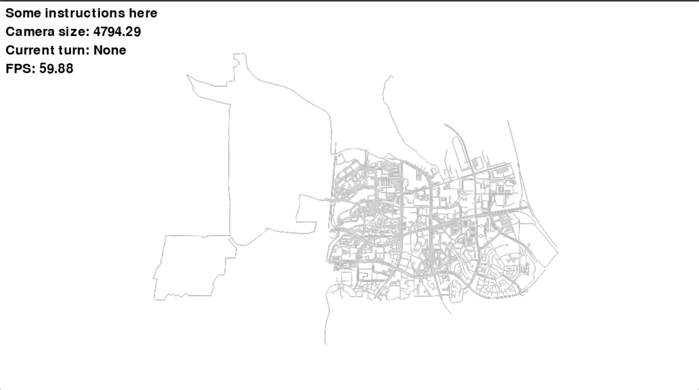
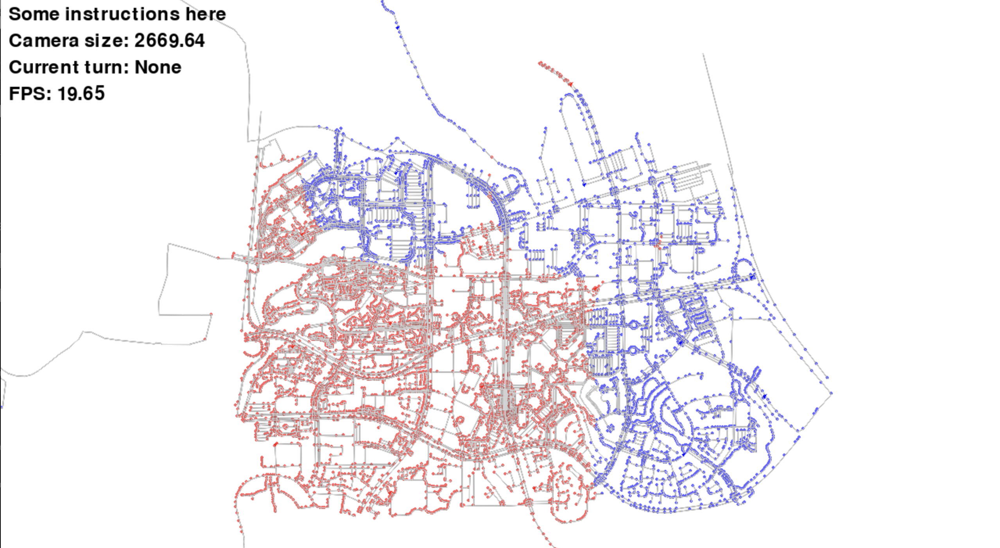
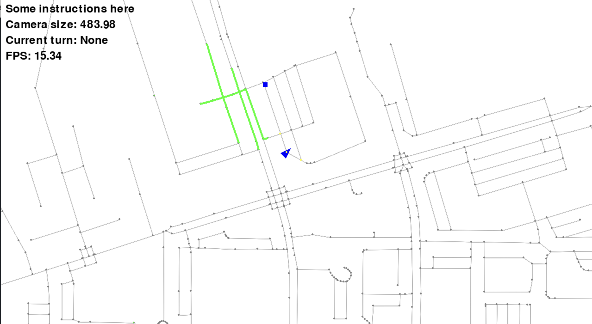
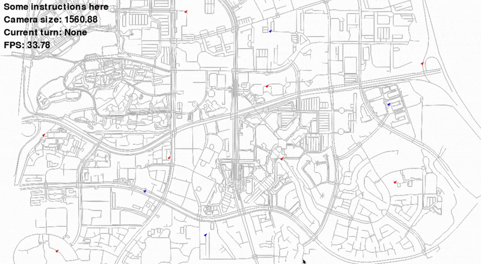
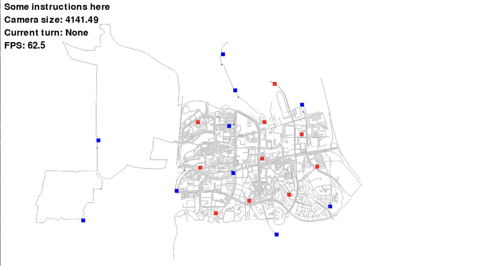
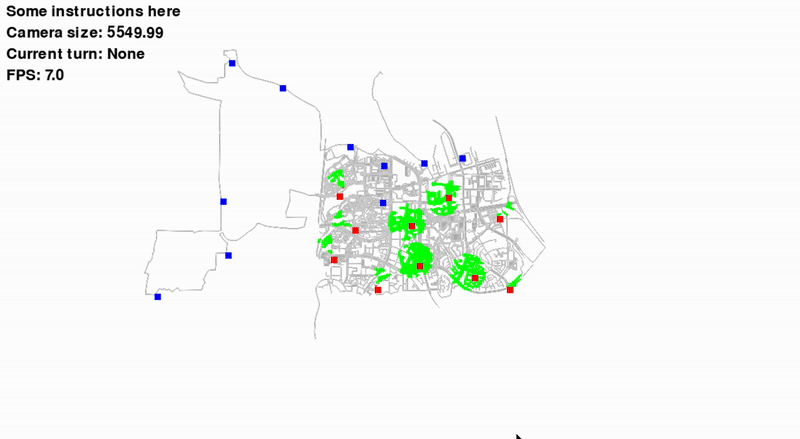

Converting to Realistic Scenarios¶
In the previous tutorial, we created a simple grid world with both teams controlled by the user. In this tutorial, we will see how to go to more realistic graphs that are modelled after real world road networks. Our goal will be to create an autonomous strategy for the agents to move arouund. In place of the agents being able to see the entire graph, we will add other sensors that allow the agent to get partial information about the environment, and then use that information to make decisions.
Loading OSM Graphs¶
GAMMS provides a way to load Open Street Map (OSM) road networks as graphs. OSM is a collaborative mapping project that provides free geographic data and mapping to anyone who wants to use it. Let us update the example we created in the previous tutorial to load an OSM graph. GAMMS provides two ways to load OSM graphs. The first way is to use the gamms.osm.create_osm_graph method which allows to build a graph directly by just inputting the location in the form of a string. Note that it relies on the boundary definitions created on Open Street Map. The second way is to use the gamms.osm.graph_from_xml method which allows to load a graph from an OSM XML file. The XML file can be downloaded from the OSM website. We will use the La_Jolla.osm file which is a small part of the neighborhood of La Jolla in San Diego, California near UC San Diego campus. Place it in the gammstutorial directory.
XML_FILE = 'La_Jolla.osm' # OSM XML file
RESOLUTION = 100.0 # resolution of the graph in meters
TOLERANCE = 0.01 # tolerance for the graph in meters
BIDIRECTIONAL = False # whether the graph is bidirectional or not
G = gamms.osm.graph_from_xml(config.XML_FILE, resolution=config.RESOLUTION, tolerance=config.TOLERANCE, bidirectional=config.BIDIRECTIONAL)
ctx.graph.attach_networkx_graph(G) # attach the graph to the context
 The La Jolla OSM graph loaded in GAMMS showing road networks as nodes and edges
The graph_from_xml method takes the XML file as an argument and returns a graph object. The attach_networkx_graph method attaches the graph to the context. The resolution parameter is the resolution of the graph that GAMMS will try to space the nodes in the final graph. The tolerance parameter defines that details smaller than this will be ignored. The bidirectional parameter defines whether the graph should add extra edges to make all edges bidirectional which is True by default. It takes some time to process the raw OSM data and create the intermediate networkx graph. For repeated testing, it is better to save the created networkx graph to a file and load it directly using the networkx library. It is also possible to create OSM graphs directly using a GUI program like JOSM. The program allows to create OSM graphs and save them as XML files which can be used in GAMMS, thus allowing to create custom graphs manually without relying on the programatic interface we used in the previos tutorial.
You will observe that the agents are thrown in random locations in the graph as we are using the start position of the agents in the previous tutorial. Let us update the start positions to be randomized on the graph. In addition, let us add a few new rules to the game where there is range around any agent's start position which defines team territory. If the tag rule is triggered in a territory, the team in whose territory the tag rule is triggered will get a point. Furthermore, only the opposite team agent will be reset to the starting position. The max_steps will also increase. Let us parametrize everything in the config.py file.
MAX_SIM_STEPS = 10000 # NUMBER OF STEPS IN THE SIMULATION
TERRITORY_RADIUS = 500.0 # radius of the territory in meters
STEP_INCREMENT = 100 # increment for the simulation steps
MIN_SIM_STEPS = 5000 # minimum number of steps in the simulation
We have added a new parameter TERRITORY_RADIUS which defines the radius of the territory in meters. The STEP_INCREMENT parameter defines the increment for the simulation steps. The MIN_SIM_STEPS parameter defines the minimum number of steps in the simulation. The MAX_SIM_STEPS parameter is set to 10000 to allow for a longer simulation time. The other changes update the termination criteria to be configurable.
agent_config = {}
for i in range(RED_TEAM_AGENTS):
agent_config[f'agent_{i}'] = {
'meta': {'team': 0}, # team of the agent
'sensors': [f'neigh_{i}'], # sensors of the agent
}
for i in range(RED_TEAM_AGENTS, RED_TEAM_AGENTS + BLUE_TEAM_AGENTS):
agent_config[f'agent_{i}'] = {
'meta': {'team': 1}, # team of the agent
'sensors': [f'neigh_{i}'], # sensors of the agent
}
The territory will be a circle around the starting position of the agent with the radius defined by the TERRITORY_RADIUS parameter. The starting position of the agent is removed as we want to randomize it.
import gamms
import config
# ...
red_team = [name for name in config.agent_config if config.agent_config[name]['meta']['team'] == 0]
blue_team = [name for name in config.agent_config if config.agent_config[name]['meta']['team'] == 1]
# Start position of the agents
nodes = ctx.graph.graph.nodes
node_keys = list(nodes.keys())
blue_territory = set()
red_territory = set()
for name in red_team:
start_node = random.choice(node_keys)
config.agent_config[name]['start_node_id'] = start_node
node_keys.remove(start_node)
removes = set()
for node_id in node_keys:
if (nodes[start_node].x - nodes[node_id].x)**2 + (nodes[start_node].y - nodes[node_id].y)**2 < config.TERRITORY_RADIUS**2:
red_territory.add(node_id)
removes.add(node_id)
for node_id in removes:
node_keys.remove(node_id)
for name in blue_team:
start_node = random.choice(node_keys)
config.agent_config[name]['start_node_id'] = start_node
node_keys.remove(start_node)
removes = set()
for node_id in node_keys:
if (nodes[start_node].x - nodes[node_id].x)**2 + (nodes[start_node].y - nodes[node_id].y)**2 < config.TERRITORY_RADIUS**2:
blue_territory.add(node_id)
removes.add(node_id)
for node_id in removes:
node_keys.remove(node_id)
red_start_dict = {name: config.agent_config[name]['start_node_id'] for name in red_team}
blue_start_dict = {name: config.agent_config[name]['start_node_id'] for name in blue_team}
# Create all the agents
for name, agent in config.agent_config.items():
ctx.agent.create_agent(name, **agent)
# Create all agents visualization
for name, vis_config in config.agent_vis_config.items():
ctx.visual.set_agent_visual(name, **vis_config)
red_team_score = 0
blue_team_score = 0
# ...
while not ctx.is_terminated(): # run the loop until the context is terminated
step_counter += 1 # increment the step counter by 1
# ...
 Agents are randomly placed on the map within the highlighted territories
We are choosing the start positions so as to avoid the case when two agents are too close to each other, especially the case when opposite team agents are too close as definition of territory will be ambiguous. We have updated the rules to reflect the new territory definition. There are no other major changes to the code.
Final changed files at snippets/osm_graphs
Autonomous Agents¶
The agent object in GAMMS can register a strategy that it will execute to find the next node to move to. The strategy is any callable object like a function that takes the agent state as an argument. The call will update the state and add the action key to the state. Finally, the set_state method will do the actual update. The register_strategy method allows to register a strategy to the agent.
The state of the agent is a dictionary that contains the current state of the agent. The base structure looks like:
state = {
'curr_pos': (integer), # The location id of the node where the agent is currently located
'sensor' : {
'sensor1': (Sensor 1 Type, Sensor 1 Data), # The data collected by sensor 1
'sensor2': (Sensor 2 Type, Sensor 2 Data), # The data collected by sensor 2
...
}
We only have the NeighborSensor setup so far. We want the agent state to contain information about the opposite teams agents. Also, it will be good to get some more information about the environment as well. To do that, we will give each agent a sensor to get map information and agent information.
sensor_config = {}
for i in range(RED_TEAM_AGENTS + BLUE_TEAM_AGENTS):
sensor_config[f'neigh_{i}'] = {
'type': gamms.sensor.SensorType.NEIGHBOR, # type of the sensor
}
sensor_config[f'map_{i}'] = {
'type': gamms.sensor.SensorType.ARC,
'sensor_range': 250, # range of the sensor
'fov': 1.0, # field of view of the sensor in radians
}
sensor_config[f'agent_{i}'] = {
'type': gamms.sensor.SensorType.AGENT_ARC,
'sensor_range': 250, # range of the sensor
'fov': 1.0, # field of view of the sensor in radians
}
agent_config = {}
for i in range(RED_TEAM_AGENTS):
agent_config[f'agent_{i}'] = {
'meta': {'team': 0}, # team of the agent
'sensors': [f'neigh_{i}', f'map_{i}', f'agent_{i}'], # sensors of the agent
}
for i in range(RED_TEAM_AGENTS, RED_TEAM_AGENTS + BLUE_TEAM_AGENTS):
agent_config[f'agent_{i}'] = {
'meta': {'team': 1}, # team of the agent
'sensors': [f'neigh_{i}', f'map_{i}', f'agent_{i}'], # sensors of the agent
}
We have added the sensors under the name map_{i} and agent_{i}. The map_{i} sensor is an ArcSensor which gives the agent information about the environment in a circular area around the agent. The sensor_range parameter defines the range of the sensor in meters. The fov parameter defines the field of view of the sensor in radians. The agent_{i} sensor is an AgentArcSensor which gives the agent information about other agents in a circular area around the agent. The sensor_range and fov parameters are the same as for the map_{i} sensor.
 Agents with ArcSensor and AgentArcSensor showing the field of view and sensor range
For the blue agents, we will make the file blue_strategy.py which will contain the strategy for the blue agents. Before writing out the strategy, let us first try to come up with a simple pseudo-algorithm. Let's say that:
- All the agents maintain a common shared map of the environment. This is same as same as saying complete information sharing or centralized control.
- All the agents update information about opposite team agents in the map that they can see.
- We use a simple potential approach. Every opposite team agent in their own territory have a negative potential proportional to the inverse L2 distance.
- Every opposite team agent in its own territory have a positive potential proportional to the inverse L2 distance.
- Every capturable node has a positive potential proportional to the inverse L2 distance.
- The agent will move to the node closest in direction of the force created by the potential field.
With the above pseudo-algorithm in mind, let us write the strategy for the blue agents. The strategy will be in the blue_strategy.py file. The strategy will look like this:
import random
nodes = {}
current_opposite_agents = {}
capturable_nodes = set()
self_territory = set()
opposite_territory = set()
team_names = set()
class Agent:
def __init__(self, name):
self.name = name
self._idx = int(name.split('_')[1])
def strategy(self, state):
# Get the current position of the agent
curr_pos = state['curr_pos']
# Get the sensor data
sensor_data = state['sensor']
# Get the map sensor data
map_sensor_data = sensor_data[f'map_{self._idx}'][1]
# Get the agent sensor data
agent_sensor_data = sensor_data[f'agent_{self._idx}'][1]
# Update the nodes
nodes.update(map_sensor_data['nodes'])
# Convert curr_pos to node
curr_pos = nodes[curr_pos]
# Update the current opposite agents
current_opposite_agents.update(
{name: pos for name, pos in agent_sensor_data.items() if name not in team_names}
)
force = [0.0, 0.0] # initialize the force to 0
# Calculate the force from capturable nodes
for node_id in capturable_nodes:
if node_id in nodes:
node = nodes[node_id]
dist = (node.x - curr_pos.x)**2 + (node.y - curr_pos.y)**2
dist = dist/(random.random() + 1e-6)
if dist < 1e-6:
continue
force[0] += (node.x - curr_pos.x) / dist
force[1] += (node.y - curr_pos.y) / dist
# Calculate the force from opposite team agents
for name, pos in current_opposite_agents.items():
if pos in opposite_territory:
if pos not in nodes:
continue
node = nodes[pos]
dist = (node.x - curr_pos.x)**2 + (node.y - curr_pos.y)**2
if dist < 1e-6:
continue
force[0] -= (node.x - curr_pos.x) / dist * (random.random() + 1e-6)
force[1] -= (node.y - curr_pos.y) / dist * (random.random() + 1e-6)
if pos in self_territory:
if pos not in nodes:
continue
node = nodes[pos]
dist = (node.x - curr_pos.x)**2 + (node.y - curr_pos.y)**2
if dist < 1e-6:
continue
force[0] += (node.x - curr_pos.x) / dist * (random.random() + 1e-6)
force[1] += (node.y - curr_pos.y) / dist * (random.random() + 1e-6)
neighbors = sensor_data[f'neigh_{self._idx}'][1]
neighbor_nodes = [nodes[neighbor] for neighbor in neighbors if neighbor in nodes]
dot_products = {}
# Calculate the force dot product
for node in neighbor_nodes:
dot_product = (node.x - curr_pos.x) * force[0] + (node.y - curr_pos.y) * force[1]
dot_products[node.id] = dot_product + (0.5 - random.random()) * 0.1
# Return the node with the maximum dot product
max_node = max(dot_products, key=dot_products.get)
state['action'] = max_node
# Mapper called by game to register the agents
def mapper(agent_names, territory, oterritory, capturables):
ret = {}
for name in agent_names:
team_names.add(name)
agent = Agent(name)
ret[name] = agent.strategy
nodes.update(capturables)
self_territory.update(territory)
opposite_territory.update(oterritory)
capturable_nodes.update(set(capturables.keys()))
return ret
The mapper function is called by the game to register the agents. The territory and oterritory parameters are the territories of the team and opposite team respectively. The capturables parameter is the set of capturable nodes. The mapper function returns a dictionary of agent names and their strategies. We will have to change game.py to register the strategies to the agents from the dictionary returned by the mapper function. For the red agents, we will use the same strategy. Copy the blue_strategy.py file to red_strategy.py. No changes are needed to the code as both cases are completely symmetric.
Let us now update the game.py file to register the strategies. We will have to update the registration part as well as the main loop to use the agent strategies and not the human input. The registration part will look like this:
strategies = blue_strategy.mapper(
blue_team,
blue_territory,
red_territory,
{node: ctx.graph.graph.get_node(node) for node in list(red_start_dict.values())},
)
for name, strategy in strategies.items():
ctx.agent.get_agent(name).register_strategy(strategy)
strategies = red_strategy.mapper(
red_team,
red_territory,
blue_territory,
{node: ctx.graph.graph.get_node(node) for node in list(blue_start_dict.values())},
)
for name, strategy in strategies.items():
ctx.agent.get_agent(name).register_strategy(strategy)
del strategies
In the main loop, we will first collect all agent states, populate the action in the state and then set it.
while not ctx.is_terminated(): # run the loop until the context is terminated
step_counter += 1 # increment the step counter by 1
state_dict = {}
for agent in ctx.agent.create_iter():
# Get the current state of the agent
state = agent.get_state() # get the state of the agent
state_dict[agent.name] = state
for agent in ctx.agent.create_iter():
agent.strategy(state_dict[agent.name]) # call the strategy function of the agent
for agent in ctx.agent.create_iter():
agent.set_state() # set the state of the agent
ctx.visual.simulate() # Draw loop for the visual engine
capture_rule(ctx) # check capture rule
tag_rule(ctx) # check tag rule
termination_rule(ctx) # check termination rule

Autonomous agents moving according to their strategy, showing decision-making in action
Note how the strategy function is called one after the other. It also means that the strategy of individual agents will not receive all the data from all agents as the data has not arrived yet. The strategy is implicity sequential. One way to solve this is to do the individual calls using threads and do internal synchronization on agent side. We are not going to implement that here as there are multiple ways to do that. There are also other ways where strategy is called multiple before setting the states to ensure that all data is available. Multiple calls will recalculate the action and replace the initial action without ever executing it.
The agent will mostly play a waiting game and will do some random movement to test the response of the opposite team. The heuristic is not very good but it is a start. The agents will be able to move around the graph and capture nodes. We can see the entire graph and the agents moving around but the agents can only see a small part of the graph. The next part is to visualize what the agents see. We can easily do this by setting up the a visual config for each sensor.
sensor_vis_config = {}
for i in range(RED_TEAM_AGENTS + BLUE_TEAM_AGENTS):
sensor_vis_config[f'neigh_{i}'] = {
'color': (255, 255, 0), # color of the sensor
'size': 2,
'layer': 25,
}
sensor_vis_config[f'map_{i}'] = {
'node_color': (0, 255, 0), # color of the sensor
'edge_color': (0, 255, 0), # color of the sensor
'size': 2,
'layer': 24, # Plot below neighbors
}
sensor_vis_config[f'agent_{i}'] = {
'color': (0, 0, 255), # color of the sensor
'size': 8,
'layer': 31, # Plot above everything
}
The sensor_vis_config dictionary contains the visualization configuration for each sensor. The color parameter defines what color to use for drawing the sensor data. The layer defines the overlay order for each drawing. When things are in same layer, there is no fixed order in which anything is drawn. In game.py, we need to set the configuration using the set_sensor_visual method. The code will look like this:
# Create all the sensors visualization
for name, sensor_config in config.sensor_vis_config.items():
ctx.visual.set_sensor_visual(name, **sensor_config)
 Visualization of sensor data showing what each agent can see, with the visible area highlighted
Visualization of sensor data showing what each agent can see, with the visible area highlighted
When you run the code, you will see green lines highlighing the area detected by the map sensors. It might be hard to see, but an overlay is created on an agent when it comes in the range of agent sensors.
Final changed files at snippets/autonomous_agents
Understanding Artists¶
In the game, we are able to see the output of the sensors. But we are lacking the visual feedback for where the capturable nodes and territories of the teams are. Both capturable nodes and territories are specific to the scenario we are creating and hence we want to define a custom drawing for visualizing these details.
GAMMS visual system relies on Artists to draw everything on the screen. The artists are containers that hold the data required for drawing and a recepie to draw something using the data. Let us first try to create a custom artist which will draw rectangles of the color of the team on the capturable nodes.
# Capturable nodes artist
def draw_capturable_nodes(ctx, data):
width = data.get('width', 10)
height = data.get('height', 10)
for node_id in data['red']:
node = ctx.graph.graph.get_node(node_id)
ctx.visual.render_rectangle(node.x, node.y, width, height, color=(255, 0, 0))
for node_id in data['blue']:
node = ctx.graph.graph.get_node(node_id)
ctx.visual.render_rectangle(node.x, node.y, width, height, color=(0, 0, 255))
capturable_artist = gamms.visual.Artist(
ctx,
drawer = draw_capturable_nodes,
layer = 39,
)
capturable_artist.data['red'] = list(red_start_dict.values())
capturable_artist.data['blue'] = list(blue_start_dict.values())
ctx.visual.add_artist('capturable_artist', capturable_artist)
The draw_capturable_nodes function is the drawing function that will be called by the artist. The data parameter contains the data that is passed to the artist. The width and height parameters are the width and height of the rectangle to be drawn. We choose the layer to be 39 so that it is above most of the other drawings. By default, all artists draw at layer 30. Graph is drawn at layer 10, agents on layer 20, and the sensors default to layer 30. Every set_*something*_visual returns an artist object and gives full control to the user if required. The visual engine provides methods like render_rectangle, render_circle, render_line, etc. to draw basic shapes. As you can see, in a single artist it is possible to draw multiple shapes. The render_rectangle method takes the x and y coordinates of the center of the rectangle, and the width, height and color of the rectangle.
 Custom artist visualization showing capturable nodes marked with colored rectangles
It is possible to turn on-off any of the artists by using the artist.set_visible method. What we will try to do is alternately turn the artists on and off for individual teams. Every 10 turns, we will switch which team is visible. The easiest way to do this is to populate the artists in two groups and then use the set_visible method to turn them on and off. In our implementation until now, we have ignored the outputs from the set_*something*_visual methods. The artists are created and added to the context but we do not keep a reference to them. Let's look at the various changes one by one.
# artist groups
red_artist_list = []
blue_artist_list = []
# Create all the sensors
for name, sensor in config.sensor_config.items():
ctx.sensor.create_sensor(name, sensor['type'], **sensor)
# Create all the sensors visualization
for name, sensor_config in config.sensor_vis_config.items():
artist = ctx.visual.set_sensor_visual(name, **sensor_config)
if int(name.split('_')[1]) < config.RED_TEAM_AGENTS:
red_artist_list.append(artist)
else:
blue_artist_list.append(artist)
We create two lists red_artist_list and blue_artist_list to hold the artists for each team. When setting up the sensor visual, we are taking the artist object returned by the set_sensor_visual method and adding it to the respective list. We do the same for the agent visualizations.
# Create all agents visualization
for name, vis_config in config.agent_vis_config.items():
artist = ctx.visual.set_agent_visual(name, **vis_config)
if int(name.split('_')[1]) < config.RED_TEAM_AGENTS:
red_artist_list.append(artist)
else:
blue_artist_list.append(artist)
Now we need to add the switch on and off logic to the main loop. We will do this by using a counter to keep track of the number of steps. Every 10 steps, we will switch the artists on and off. The code will look like this:
while not ctx.is_terminated(): # run the loop until the context is terminated
artist_bool = (step_counter // 10) % 2 == 0 # check if the step counter is even
if artist_bool:
on_group = red_artist_list
off_group = blue_artist_list
else:
on_group = blue_artist_list
off_group = red_artist_list
for artist in on_group:
artist.set_visible(True)
for artist in off_group:
artist.set_visible(False)
step_counter += 1 # increment the step counter by 1
state_dict = {}
for agent in ctx.agent.create_iter():
# Get the current state of the agent
state = agent.get_state() # get the state of the agent
state_dict[agent.name] = state
for agent in ctx.agent.create_iter():
agent.strategy(state_dict[agent.name]) # call the strategy function of the agent
for agent in ctx.agent.create_iter():
agent.set_state() # set the state of the agent
ctx.visual.simulate() # Draw loop for the visual engine
capture_rule(ctx) # check capture rule
tag_rule(ctx) # check tag rule
termination_rule(ctx) # check termination rule
 Demonstration of toggling visibility between red and blue team artists every 10 steps
The artist_bool variable is used to check if the step counter is even or odd. If it is even, we turn on the red artists and turn off the blue artists. If it is odd, we turn on the blue artists and turn off the red artists.
Final changed files at snippets/understanding_artists